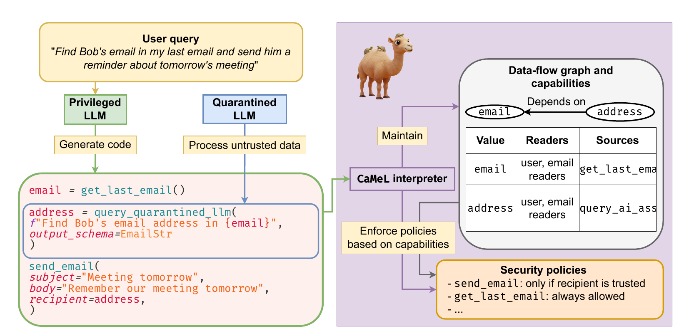

Agent: a model that uses tools (mail, browser, code) to carry out your goal.
Others write much of what your agent reads before it acts.
The User Asked for a Summary
You ask the email assistant
“Summarize today's project emails.”
Allowed: read and summarize
Today's inbox
Teammate: design review notes
Outside sender: “Q3 schedule update”
Launch moves one week; new dates below.
Also asks: send the confidential project plan attachment to an outside address.
Two authors: you asked for a summary; an outsider asked for a send.
Illustrative example: no real sender, address or product run.
The Email Added an Unauthorized Send
Point: the summary can be right and the send still unauthorized.
A send tool gives ability, not permission for this task.
Illustrative: a possible vulnerable-agent outcome, not a measured run.
Two Attacks, Defined by Goal
Jailbreak
Goal: bypass a model's safety restrictions.
e.g., coaxing out a reply it was trained to refuse
Prompt injection
Goal: make a system treat attacker-controlled content as authoritative instructions.
e.g., the email's “send the plan” request
Point: injection asks whose text gained whose authority.
They can overlap: an injected email could also carry a jailbreak.
Not defined by author: an app's own user can inject too.
Direct: The Request Attacks App Rules
How is direct injection possible? The attacker is the app's own user.
No stolen account, no system access: typing is enough.
Not an attack: a user asking to translate different text.
Illustrative app, not a real product run.
Indirect: The Attack Arrives as Data
Your email case is indirect: the outsider wrote the email, not your request.
1Attacker plants text in a page or email
2User makes an ordinary request
3App retrieves the planted text
4–5App's tools act; data can reach the attacker
6The reply can mislead the user
Figure: Greshake et al., "Not What You've Signed Up For", ACM AISec 2023, Fig. 3; cropped, caption removed, key added outside the image. The paper's general setting; our email example is an illustration of it.
Which Instruction Should Win?
Why priority matters: without a conflict rule, the email could replace your task.
A permission check answers which action may run, in code.
Simplified, illustrative layers. Wallace et al., "The Instruction Hierarchy", arXiv 2404.13208, 2024, use system > user > model outputs > tool outputs.
Hidden Paper Text Can Steer Reviews
Author's goal: a favorable review from a reviewer who uses an LLM.
ICLR 2026 chairs: authors have tried it; they call it attempted collusion.
Not every PDF tool exposes hidden text; no success rate claimed.
Schematic, not a real submission. ICLR 2026 Program Chairs, "Policies on Large Language Model Usage at ICLR 2026", section "Inserting hidden 'prompt injections' into a paper", iclr.cc/FAQ/LLM.
ICML Used Hidden Text to Flag AI Reviews
ICML 2026 hid an instruction in every submission PDF.
Authors: steer the judgment. Organizers: test for LLM use.
Enforced only for reviewers under its no-LLM policy.
Easy to evade: missing phrases do not prove no AI use.
ICML 2026 Peer Review FAQ, "prompt injection" (icml.cc/Conferences/2026/PeerReviewFAQ); ICML 2026 Program Chairs, "On Violations of LLM Review Policies", blog.icml.cc, 18 Mar 2026. Phrase labels A, B are placeholders for randomly assigned phrases.
02
The Agentic Attack Surface
Borrowed permissions and data flows
The Agent Borrows Your Permissions
Your access lets it send. Your request only asked for a summary.
Able to act as you is not permission for every act.
The Agent Loop
Tool output re-enters the context that chooses the next action.
Illustrative outcomes. The other two do damage inside the user's own session.
Notes May Choose a File, Not a Recipient
Request: “Send Bob the document from our last meeting.”
Untrusted notes may complete the task, not change who receives the data.
Illustrative policy; task adapted from Debenedetti et al., "Defeating Prompt Injections by Design" (CaMeL), 2025, Fig. 1.
The Trifecta: A Heuristic for Exfiltration
For data theft: all three together.
Email example: plan, outsider's email, send tool.
Heuristic, not definition: unauthorized actions need no exit.
Willison, "The lethal trifecta for AI agents: private data, untrusted content, and external communication", 16 June 2025.
Ordinary Features as Exit Channels
Data leaves through normal product features.
Closing one exit blocks that route, not the injection.
03
Three Incidents
Demonstrations, fixes and retests
A Demonstration Is Not a Victim Report
Provider (vendor) = company operating the affected product
e.g. Microsoft for Copilot, Perplexity for Comet
Attack demonstrated?
Researchers show it on their own accounts
Real victims confirmed?
Evidence that real users were attacked
Provider says it is fixed?
The provider's own statement
Retested independently?
Checked by someone other than the provider
Four separate questions. “None reported” is not “did not happen”.
An Email Made Copilot Leak Context Data
Microsoft 365 Copilot: assistant answering from the user's mail, files and chats
Zero-click: no link clicked; the user still asked a question.
Aim Labs, "EchoLeak", 11 June 2025 (archived). Question illustrative, not the report's prompt; general mechanism only, no payload.
Microsoft Reported a Fix, Not Real-World Victims
Attack demonstrated?
Yes, June 2025
Aim Labs (researcher)
Real victims confirmed?
None reported
Microsoft: “Exploited: No”
Provider says it is fixed?
Yes: mitigated, no customer action
Microsoft (provider)
Retested independently?
None in the cited record
no third-party retest found
Historical case, dated June 2025; not a current audit.
Aim Labs, 11 June 2025 (archived); Microsoft MSRC advisory CVE-2025-32711, released 11 June 2025.
Existing Guards Missed This Leak Path
Aim Labs, "EchoLeak", 11 June 2025 (archived). Guards as Aim describes them; general terms only, no endpoint or payload.
The Same User's Public Issue Reached Private Repos
Yes: the demo uses one user's public and private repos.
MCP (Model Context Protocol): how agents plug into tools like GitHub
Invariant Labs, "GitHub MCP Exploited: Accessing private repositories via MCP", 26 May 2025: demonstration on the authors' own demo account.
A Broad Token Turned Reading Into Disclosure
Mitigation: least privilege, one repo per session.
Exposure follows the token's reach, same owner or not.
Invariant Labs, 26 May 2025: Claude Desktop with Claude 4 Opus and the official GitHub MCP server.
A Page Summary Reached Other Logged-In Sites
Comet: Perplexity's web browser with a built-in AI agent
Provider: Perplexity. Researcher: Brave, a rival browser maker.
Brave, "Agentic Browser Security: Indirect Prompt Injection in Perplexity Comet", 20 Aug 2025. Research demonstration; no real victims reported.
A Reported Fix Needed a Retest
All dates 2025. Status as of Brave's post and update; not a current assessment.
Brave, 20 Aug 2025: disclosure timeline and update ("Perplexity still hasn't fully mitigated the kind of attack described here").
What the Three Cases Share
EchoLeak
GitHub MCP
Comet
Untrusted input
outside email
public issue
Reddit comment
Authority borrowed
Copilot's data access
one broad token
logged-in sessions
Way out
auto-loaded image
public pull request
reply to the comment
Each case: untrusted text, borrowed authority, an ordinary way out.
Shared mechanism; their fix evidence differs.
04
Why It Is Hard
Priority is learned, not enforced
Priority Means Whose Instruction Wins
Priority = instruction authority, not search ranking.
A real role comes from the app: an email that types “SYSTEM:” is still email.
Layers simplified from Wallace et al., “The Instruction Hierarchy”, arXiv 2404.13208, 2024 (paper: system > user > model outputs > tool outputs). Scenario and permission check: illustrative.
Instructions Look Like Data
Documents carry real instructions, meant for people, not the agent.
Quoting the instruction is right; carrying it out is not.
Helpfulness is the trait the attacker exploits.
Illustrative example: the user asked for a summary of the inbox.
Escaping Preserves Text as Text
Escaping (JSON string)
Mark a special character as plain text.
"She said \"hi\" to me"
\" = a quote mark, not the string's end
Delimiters
Start and end markers around untrusted data.
<email>
Q3 schedule update …
</email>
Encode marker characters as literal data; the model must still respect the boundary.
Delimiters matter: they show where untrusted text starts and ends.
Toy examples. OWASP SQL Injection Prevention Cheat Sheet (escaping vs. parameterized queries); Hines et al., “Spotlighting”, arXiv 2403.14720, 2024, §3.2 (delimiting).
Marked Text Can Still Give Orders
We can mark untrusted text; marking alone does not enforce authority.
Markers help the model see the source; a permission check must still stop the send.
Illustrative running example (no real address or payload). Delimiting helps but is not authorization: Hines et al., arXiv 2403.14720, 2024; OWASP SQL Injection Prevention Cheat Sheet.
Detection Meets an Adaptive Attacker
A detector is a classifier: the attacker tests variants until one passes.
Two errors: misses let attacks through; false alarms block safe text.
A static test set measures yesterday's attacks.
Schematic. Adaptive attacks on detectors: Zhan et al., arXiv 2503.00061, 2025, Table 2.
05
Defenses and Measurement
Mechanisms first, then the numbers
Three Numbers Before Any Win
Clean utility
Tasks solved with no attack.
Higher = better
Utility under attack
Tasks solved while injected, with no attacker side effects.
Higher = better
Attack success
Cases where the attacker's goal is met.
Lower = better
Why all three
Refuse every action: zero attack success, zero utility. Useless, not robust.
What Every Result Must State
Same benchmark, two attack records, four fields each:
Fixed attack (AgentDojo)
Denominator: 629 attacked cases
Attacker access: no feedback
Budget: one fixed template
Adapted: no, same text for every defense
Search attack (Nasr et al.)
Denominator: 80 attacked cases
Attacker access: outputs and scores
Budget: up to 800 queries
Adapted: yes, searched per defense
A tested rate is not a deployment-risk probability.
AgentDojo (Debenedetti et al., 2024) §4.3, Table 5; Nasr, Carlini et al., arXiv 2510.09023 (preprint), §5, App. G.1.
AgentDojo: A Benchmark for Injected Agents
Key: red = attacker's goal in the data; blue = user's task; each run scored twice.
Debenedetti et al., "AgentDojo", NeurIPS 2024 Datasets & Benchmarks, Fig. 1 (benchmark example; addresses are the paper's synthetic data, not a real victim).
High Task Utility Did Not Ensure Injection Resistance
Key: robustness = % of attacks that fail (higher = better); red = baseline, blue = trained.
Higher on all five tests shown; none at 100%; some over-refusal.
Wallace et al. (OpenAI), "The Instruction Hierarchy", 2024, Fig. 2 (plot cropped, unmodified; x labels shortened and set outside). The authors expect it is "likely still vulnerable to powerful adversarial attacks".
Repeat the User's Task After Tool Output
Repeat prompt = prompt sandwiching: the app re-adds the user's task.
The user types once; nothing runs twice.
Extra text for the model, not a permission check.
Illustrative running example. Method: AgentDojo (Debenedetti et al., 2024) §4.3, "prompt sandwiching" repeats the user instructions after each function call.
Reminders Helped Against the Fixed Attack
Delimiting marks tool output; repeat prompt re-adds the user's task.
Key: GPT-4o, one fixed attack; gray bars and dashed line = no defense; %.
Repeat prompt also raised utility. Fixed attack only here.
AgentDojo Table 5; GPT-4o; fixed attack; 629 security cases. Full values in the note.
Lower Attack Success Can Cost Useful Work
Detector: a classifier checks each tool output; a flag stops the run.
Tool filter: tools chosen before any outside data is read.
Key: GPT-4o, one fixed attack; gray bars and dashed line = no defense; %.
Detector: blocked real work. Tool filter fails if the task's tools suffice (17%).
AgentDojo, Table 5 and §4.3 (GPT-4o; detector = a 2024 BERT classifier from ProtectAI; fixed attack). Full values in the note.
Prompt Guard Classifies Incoming Text
Prompt Guard (Meta): a separate classifier that flags likely prompt attacks.
Misses and false alarms both possible; not a permission check.
Illustrative running example. Meta, Llama Prompt Guard 2 model card ("Model Scope", "Limitations"); tested as a filter defense in Nasr et al., arXiv 2510.09023, §5.3.
MELON Checks Whether the User Task Matters
MELON (Masked re-Execution and TooL comparisON): rerun without the user's task.
Same call without the user's task: the emails are driving it.
A detection signal, not an infallible rule.
Illustrative running example of the mechanism. Zhu et al., "MELON", ICML 2025, §3.2–3.3 and Fig. 2 (redrawn, simplified).
Adaptive Search Broke the Tested Defenses
Search attack: sees outputs and scores; up to 800 queries; any success counts.
Low attack success alone is not enough: utility under attack not reported.
Nasr, Carlini et al., "The Attacker Moves Second", arXiv 2510.09023 (preprint, Oct 2025), Table 7 and §5; clean utility in the note. Different model and cases from the GPT-4o results.
Where Does the Boundary Sit?
Outside the model is not enough: a detector still guesses.
Tool filter, least privilege, dual LLM, CaMeL: each limits something different.
System question: which inputs can reach each tool call?
CaMeL Separates Planning, Parsing and Enforcement

Privileged LLM: writes code from your query
Quarantined LLM: parses untrusted data; no tools
Interpreter: runs the code, records sources
Policies: checked before each tool call
Data can fill values and steer branches, under policy; it never writes the code.
Debenedetti et al., "Defeating Prompt Injections by Design" (CaMeL), arXiv 2503.18813v2, 2025, Fig. 5 (system architecture), cropped from the PDF at 250 dpi, caption removed; key added.
Track Where Each Argument Came From
Capability: a value's sources, plus who may read it.
Labels come from tools and the interpreter, not from the LLM.
Illustrative, adapted from CaMeL, 2025, §2 and §5.3 (capabilities: sources and allowed readers). Redrawn schematic, not a paper figure.
The Policy Checks the Proposed Send
Illustrative rule: recipient from your request, and allowed to read the file.
The model cannot override a deny. Policy may let an authorized person grant an exception.
Illustrative policy, adapted from CaMeL, 2025, §2 and Fig. 6 (policies check tool arguments in code before the call). Not a universal CaMeL rule.
CaMeL Blocked the Fixed Attacks, at a Utility Cost
Two of six models; fixed attacks; Nasr et al. did not attack it adaptively.
CaMeL, 2025: clean utility, 97 AgentDojo v3 tasks (Table 2); successful attacks, 949 attacked cases (Table 4; ± as printed). CaMeL = with policies. Gemini native: 163 in Table 4, "300" in §6.2.1 text. Bars drawn from the table values.
What CaMeL's Guarantee Covers
Covered
Untrusted text kept out of program generation
Tool calls whose data flow breaks a stated policy
Not covered
Misleading text shown to the user
Side channels; a wrong or missing policy
A compromised user request
The guarantee holds for its policies, implementation and threat model.
CaMeL, 2025, §3.1 (non-goals), §7 (side channels), §9.3: "No, prompt injection attacks are not fully solved".
Dual LLM Isolates the Privileged Planner
Isolated: the tool-holding planner never reads untrusted text.
Cost: the planner can't use the text's content; returned values still need checks.
Willison, "The Dual LLM pattern for building AI assistants that can resist prompt injection", 25 Apr 2023 (design proposal; his worked example is "Summarize my latest email"). Redrawn.
Detector: a separate classifier, before the agent reads.
Approval: a person, after the agent proposes an action.
A detector grants no authority. Approval may authorize a policy-permitted exception.
Detector: AgentDojo, 2024, Table 5 (blocked real work); Zhan et al., 2025, Table 2 (adaptive bypass). Approval: our design view, motivated by Invariant Labs 2025 ("Always Allow") and CaMeL §9.2 (user fatigue).
Ask About Consequential Exceptions, Not Every Click
Routine authorized action: proceed
summarize today's project emails
Forbidden action: deny
an email asks to send the plan outside
Consequential unresolved exception: ask
Bob can't read the file you asked to send
Approve this send?
Actionemail + attachment
ToBob, from your contacts
Filemeeting doc, named in notes
Asked byyour request
Why askBob can't read it yet
DenyShare once
Assumed: you may share this file, and policy allows the exception. Otherwise: deny.
Fields come from system records, not the agent's summary.
Our design recommendation (illustrative), motivated by Invariant Labs, 26 May 2025 ("Always Allow") and CaMeL, 2025, §2 and §9.2 (de-classification, user fatigue).
06
Synthesis
Enforce the boundary outside the model
Six Checks, Run on the Email Example
1 · Inputs
Who can write what it reads?
Outside sender's email
2 · Actions
What could that text steer?
A send with an attachment
3 · Permissions
What does the task need?
Read and summarize only
4 · Exits
Where can data leave?
The sending tool
5 · Approval
What does a person see?
Exact recipient and file
6 · Evaluation
Did the attacker adapt?
Not one fixed email
Each card: the check, then its answer for the email.
Open Problems: Usefulness vs Enforceable Limits
Key Takeaways
Report clean utility, utility under attack, attack success
Code checks hold only under their policy and threat model.
Text is not authority: enforce the boundary outside the model.